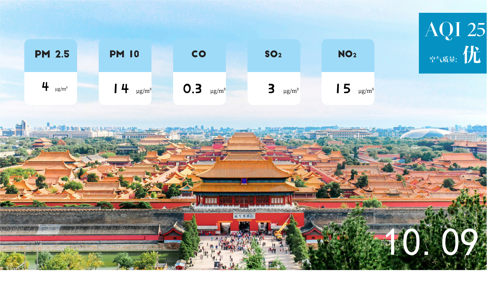
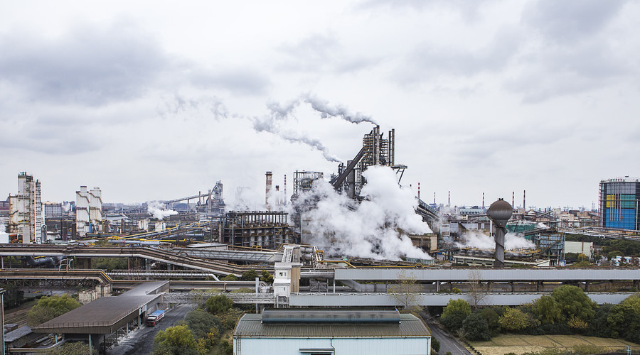

时至今日，人们早已不再追求生存而追求着更好的生活质量。但在不断地追求着更美好的生活的同时，人们却也逐渐注意到了与人们生存所息息相关的大气环境。那个终日笼罩在雾霾之下的北京在2014年推行了京津冀协同发展战略，将部分污染企业迁往的河北和天津，以求在带动津冀地区经济发展的同时能够缓解北京大气污染所带来的压力。那么北京地区的空气质量真的是否如预想般的改善了呢？这一点关系着北京人们生存的命脉。 我们从北京统计年鉴、北京市环境保护检测中心、河北省环境监测中心以及美国驻华大使馆等诸多官网中获取了衡量空气质量的空气污染指数（API）并对其进行整理分析、并归纳总结，最终发现北京地区的空气质量真的如预想般的改善了，与此同时……
 ▲10月9日北京的空气质量(数据来源：北京市环境保护检测中心)
2017年5月21日，和这一年中的任何一天都一样的平淡无奇，但对于此时此刻正在前往邯郸高铁上的宋激扬来说，却有着其独特的意义。
此时在北京往邯郸的高铁上，宋激扬的电话放下又响起，此起彼伏的还有别处传来的各种电话铃声。他知道在这趟高铁上有不少人面临着和他一样的境遇：为将自己的产业从北京迁出而两地奔波。
在进入2017年以来的这段时间内，已经有几百家企业离京而去，以后也许还将会有更多。宋激扬不清楚自己的机械设备公司迁出之后未来的前景如何，但心里明白离开北京是推行国家政策的必然结果，他必须接受这项挑战。
时至今日，距离2014年2月26日国家提出推行京津冀协同发展战略已过去了4年有余，该战略的目标是将1000多家制造业从北京迁往河北唐山、石家庄等地，而随着政府政策的逐步实施，位于北京的部分高污染企业已逐步向津冀地区转移，甚至关停。
2014年之后，随着北京“清理 ‘散乱污’企业政策”的实行，北京市矿物、燃气、石油加工类行业企业的数量呈现出逐年下降的明显趋势，这背后隐藏着的便是无数个宋激扬的企业搬迁的大征程。北京希望能够借助京津冀协同发展战略来带动津冀地区的产业发展的同时，治理北京的大气环境。当然，也许在绝大多数的天津以及河北人的眼里，北京仅仅是想将其烟囱中排出的滚滚黑烟流放到津冀，以此来驱逐北京空气中的污浊。
“着急是肯定着急的，我跑的地方太多了，担心他后期建设各方面出问题，就是说后期手续、开工许可证、土地证啥的；然后还有工程质量也担心，换个地方政策也不一样。”刘晓飞的眉眼中同样有着挥之不去的焦虑，对未来的期待和担忧紧锁在眉头之间，“当然我知道这也是一种机遇，也是为了咱北京的环境和发展，我们也得到了一个走出去的机会。”
 ▲大气污染
北京市市政府大力推行将高污染工业企业迁出北京的政策是不无道理的，重回笑笑眼中的清澈正证实着这点。自从2013年刘琳怀上笑笑以来，她所呼吸的空气似乎已不是那么的纯净，以至于笑笑还没有出生，就已经确诊患上了肿瘤。而一出生，更是要面临着切除肿瘤所带来的生命危险。虽然手术成功，但在此之后，笑笑仍是需要进出北京各大医院、服用瓶瓶罐罐的颗粒胶囊，吃药打针已经是这个孩子的日常。
“看着她张着嘴巴费劲咳嗽的时候，有时候甚至会咳到喘不过气来，我不得不去想得做点儿什么。”2015年，刘琳以一己之力发行了一部纪录片的同时，还和她的丈夫用几年攒下的积蓄在海南买了房子，冬天的时候夫妻俩就把孩子送去那里和奶奶居住。他们离开了这个他们打拼了十多年的城市，只为给孩子一个健康清新的空气环境。
2013年1月，北京市仅有5天不是雾霾天，大气环境急需改善。在这之后的几年里，各种工业企业迁移的政策也随之发行，京津冀的产业结构进一步变化，北京市大部分的火力发电厂、化工企业、煤炭企业、钢厂等污染性重工业迁往别处。
北京市的空气也在这段时间里悄然变化着。
当然，北京市空气质量的提高也离不开大气中pm2.5浓度逐年来的下降，人们也逐渐摘下了常年戴着的口罩。终于，在大多数的时间里，小孩子们终于不用躲避在密闭的空间里用手扒着窗户来观察外面的世界，行走在街上的大人也不用终日都戴着里三层外三层的无纺布口罩以躲避雾霾的侵袭。人们终于可以潇洒的带着家人外出逛逛公园、散散步，呼吸原本可以轻松享受的新鲜空气。
在2014年到2017年以来，北京市空气质量达标天数呈现出上升趋势，而PM2.5浓度却在逐年下降。尽管时不时我们仍能听到北京的雾霾问题仍在困扰着民众，但相较于以前，北京的大气环境已改善了不少，呈现出良好的趋势。至少在北京的居民小区广场上，我们又能看到清晨跳广场舞的阿姨们了。
不仅仅是PM2.5指数的变化，大气有害污染物排放量也在呈不断下降的趋势，北京的空气，是实打实的从各种空气构成成分上逐年好转的。
重工业制造业企业的迁出也随之带来了工业废气排放量的下降。原先对大气污染最严重的工业废气排放量也因政府政策的实施，均在2014年之后出现显著的降低。而其在大气污染物排放量的占比也在不断的下降，这切切实实的印证着北京推行京津冀协同发展战略所带来的一定成效。
2014年像是一个转折点，在这一年中，北京通过非常规治理得到了让世界瞩目的APEC蓝，北京市的各种企业开始走上迁往别处的旅途，一点点减少着北京的工业废气排放，对改善北京的空气质量直接地起着良好的推进作用。
“我的工厂最后是往邯郸迁了。”宋激扬像是松了一口气，随着手续和资金的落实，他心里的石头总算是稍稍落了地，“毕竟是京津冀协同发展战略嘛，我们一般都是往河北这边跑，找地方，领导办事也快。” 京津冀发展战略提出之后，北京市的各种工业企业大多迁往了经济欠发达的河北省。对于河北省来说，这固然是经济发展的重大机遇，但同时也不免让更多人担忧河北省的空气质量是否因此遭到更加严重的恶化，从而对北京所实施的政策产生质疑。 2014年以来，由于北京的污染企业主要迁移河北省的唐山曹妃甸以及石家庄，这似乎使得河北空气恶化成为一种必然，但事实上河北省的空气质量数据大体上呈现平缓下降的趋势，意即它的空气质量正不断呈现出良好的发展态势，并没有出现空气质量因企业的迁移而大幅度恶化的情况，这不禁让人更加肯定京津冀协同发展战略推行的正确性。
在环境保护和可持续性发展迫在眉睫的情况下，我国各地都在推行了各种治理环境、改善空气质量的措施。而北京市就主要通过将工业企业迁移出首都的京津冀协同发展战略来推行环境保护。而在几年以来，上百家工业企业已经再津冀地区安了家，有的则还在路上。而未来几年，加入这一征程的企业也会越来越多。而这项举措也确实在北京市大气污染治理上起到了一定作用。在2017年上半年，北京市PM2.5平均浓度为仅56微克/立方米，同比下降15.2%。
“我们来这里是来干活的，我们能解决这里一部分的就业，能带动周边科技的进步，也在积极配合推进北京治理大气污染。”迁出北京后，宋激扬的产业在邯郸很快得到了各种政策的落实，迎来了自己新的上升期，“我们并不觉得是被赶出去了，而是在新的生产结构下，我们给北京一个更好的环境，也找到了自己新的生产经营的环境，这挺好的。”
虽然北京想要完全改善空气质量还有一段路要走，但我们有足够的理由相信，笼罩在北京上空的阴霾终将会散去。